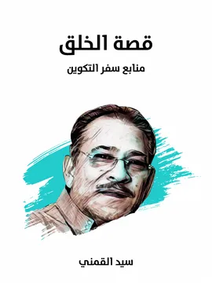

قصة الخلق: منابع سفر التكوين

قراءة عربية أصلية محددة النطاق في الصفحات 9 إلى 14 من ملف PDF المرتبط، وليست تلخيصا كاملا للكتاب. نناقش ما تدعمه هذه المقاطع فقط.
القمني يقرأ سفر التكوين مرآة للمشاع الأول
يفتتح القمني كتابه: سفر التكوين هو قصة البداية، أو هو سفر الحكاية الأولى، رواية المجتمع الإنساني مذ كان تجمعًا، في البدء وكيف كان، إلى أن بلغت الرواية اكتمال نضجها مع قمة تطور السلطة في المجتمع؛ وعندما يحدث التطور الجديد الآتي فلن تكون ثمة حاجة للرواية التي رفعت من زمن بعيد لعالم مفارق كمرآة للواقع الأرضي. فعندما كان المجتمع في الابتداء مشاعًا كانت أرباب السماء في متعة الشيوع تمرح، وعندما تحول المجتمع الأرضي إلى مشتركات ترأسها مجامع ديمقراطية بدائية، أصبح للآلهة ذات المجامع لكن لتقرر للبشر على الأرض المصائر، وعندما تم تقسيم العمل على الأرض تحول مجتمع السماء إلى آلهة شغيلة وآلهة للتفكير والتدبير. وعندما تمكن الإنسان من الابتكار وصنع جديد لم يكن من قبل كائنًا، تمكنت آلهة السماء من الخلق والتكوين، وعندما تمركزت السلطة في يد ملك على رأس دولة مركزية وصارت كلمته نافذة، قيل إنه في البدء كانت الكلمة، رغم أنه في البدء كان المشاع والفعل بلا كلام. وما كتابنا هذا إلا شرح لذاك.
زاوية وحدود القراءة
قراءة موجزة من ص ٩ إلى ص ١٤ من أصل ١٤٨ صفحة، تعرض مفتتح الكتاب، لا الكتاب كاملًا.
الطبعة والقراءة
هذه النسخة من الكتاب صادرة ومتاحة مجانًا بموجب اتفاق قانوني بين مؤسسة هنداوي والسيد الدكتور سيد القمني.
تنزيل PDF المجاني ↓ القراءة والمصدر الرسمي ↗